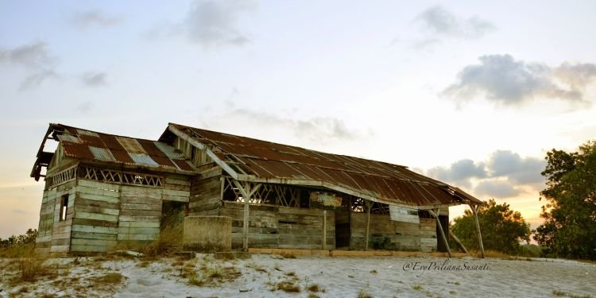
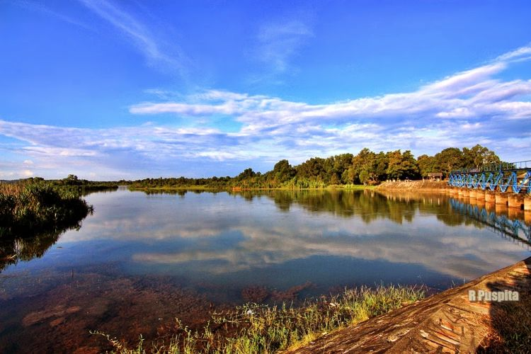
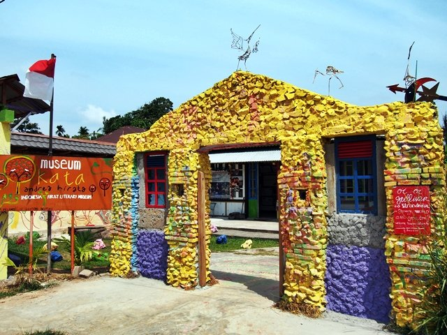
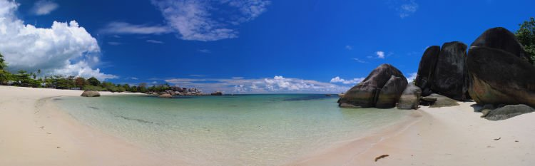

Seiring dengan melajunya popularitas novel sekaligus film karangan Andrea Hirata, secara tak langsung juga mendongkrak Pulau Belitung menjadi destinasi alternatif bagi para traveler. Bahkan, tak jarang turis mancanegara pun merencanakan liburannya ke pulau yang hanya memiliki dua kabupaten ini.
Seperti apa pesona keindahan alam dari pulau yang berbatasan dengan Selat Gaspar dan Selat Karimata ini? Berikut akan Hipwee ulas tentang destinasi wisata yang bisa kamu kunjungi di Pulau Belitung ini. Simak baik-baik ya, Travelers!
SD Muhammadiyah Gantong atau SD Laskar Pelangi. Berdiri di bukit berpasir putih dengan danau-danau kecil yang menenangkan hati.

Tempat yang tentu menjadi sorotan semua khalayak apalagi kamu, para traveler, ketika berlayar ke Pulau Belitung. Setelah membaca dan menonton film Laskar Pelangi, tentu keinginanmu berkunjung ke sekolah yang digunakan syuting film itu ‘kan. SD Muhammadiyah Gantung atau masyarakat setempat menyebutnya Gantong, sebenarnya memiliki tiga bangunan sekolah di tempat yang berbeda. Pertama adalah bangunan asli yang sudah ada sejak dahulu kala, berikutnya adalah sekolah yang dibangun oleh pemerintah setempat, dan yang ketiga adalah bangunan yang dipakai oleh Lintang dan kawan-kawan dalam film Laskar Pelangi. Sayangnya, sekarang sudah tidak ada lagi bangunan asli, karena sudah direnovasi oleh pemerintah daerah menjadi bangunan semi modern.
Dari ketiga bangunan sekolah itu, kamu hanya bisa berkunjung ke dua sekolah yang dipakai dalam syuting film Laskar Pelangi dan sekolah asli yang sudah ada sejak dulu. Tapi, yang akan membuatmu penasaran tentu sekolahnya si Lintang. Kalau kamu beruntung, sekolah ini nggak dikunci sama sekali. Jadi, kamu bisa masuk ke ruang kelas, duduk di bangku siswa, dan bayangkan kamu sedang diajar oleh Ibu Muslimah. Nah, SD Muhammadiyah Gantong berada di perbukitan yang dipadati dengan pasir putih yang sangat lembut di kaki, dengan rerumputan yang ‘yahud’ buat berfoto ria. Ya, biar album di Instagram-mu lebih indah mempesona juga. #tsaaah
Sempatkanlah berfoto di Bendungan Pice. Mungkin di sinilah anak-anak setempat menghabiskan waktunya di kala senja.

Sudah berdiri kokoh sejak masa penjajahan Belanda, Bendungan Pice kini menjadi tempat favorit masyarakat Gentong untuk berburu senja maupun sunrise. Bendungan yang dibangun oleh insinyur Belanda bernama Sir Vance ini semula digunakan sebagai barometer untuk mengetahui tinggi rendahnya permukaan air sungai Linggang, supaya mempermudah para pekerjanya dalam mengeksplorasi timah di tanah Belitung.
Bendungan yang membelah kota Gantung ini memiliki panjang hingga 50 meter. Kalau kamu ingin berburu sunset yang cantik di pulau Laskar Pelangi, sempatkanlah untuk mampir ke bendungan ini. Dari sisi barat, kamu akan menumui gemuruh awan gemawan yang berarak dengan warna jingga kuning kemerahan yang menentramkan batin. Belum lagi refleksi senja pada air sungai yang begitu sayang untuk tidak diabadikan. Ambillah pose dari baliknya, dijamin teman-temanmu iri dengan anggunnya soremu di tanah Belitung. Yakin, deh!
Lengkapi jelajah Laskar Pelangi-mu ke Museum Kata Andrea Hirata, Museum Sastra pertama di Indonesia.

Mereka yang dapat menghargai kata, akan dihargai di kehidupan ini. Andrea Hinata
Satu lagi destinasi wisata yang nggak boleh ketinggalan kamu jajaki. Museum Kata Andrea Hirata. Buat penggemar serial Laskar Pelangi, tentu mampir ke museum ini adalah keharusan yang nggak boleh terlewatkan. Museum yang berada di desa Lenggang, Gantung, Belitung Timur ini menyimpan berbagai dokumentasi karya Laskar Pelangi dan beberapa karya Sastra lainnya. Bahkan ruangan di museum ini dibuat dengan tematik, diambil dari nama-nama tokoh yang meramaikan novel Laskar Pelangi. Buat kamu pecinta kopi, di bagian belakang museum ini terdapat sebuah dapur kuno ala Malaysia yang menyediakan kopi tradisional yang bisa kamu nikmati. Bertajuk ‘Kupi Kuli’, dijamin kamu akan rela antre untuk bisa menikmati segelas kopi yang diseduh oleh seorang wanita dengan piawai. Hmm. Mencium aroma kopi di ruangan ini saja rasanya sudah nikmat sekali, apalagi langsung menyesapnya sedikit demi sedikit. Wah!
Bukan hanya pribumi, turis mancanegara pun nggak sedikit yang berkunjung ke museum yang direncanakan akan berganti nama menjadi Museum Andrea Hirata ini. Untuk menuju ke sini, kamu membutuhkan waktu dua sampai tiga jam perjalanan dari Tanjung Pandan. Oh, ya, saran dari Hipwee sih, kamu harus meluangkan waktu seharian untuk berkunjung ke museum ini. Karena kalau cuma 2-3 jam, rasanya sangat kurang puas.
Masih dalam perjalanan Laskar Pelangi, mampirlah ke Pantai Tanjung Tinggi. Pasir putih dengan batuan granit menjadi daya pikat tersendiri untuk kamu kunjungi.

Pantai yang berada 30 km di sebelah utara kota Tanjung Pandan ini merupakan tempat wisata yang paling populer di Pulau Belitung. Betapa tidak, setelah Laskar Pelangi mendunia, pantai Tanjung Tinggi ini langsung menjadi pantai yang paling sering dikunjungi oleh para pelancong. Buat kamu yang pernah nonton film Laskar Pelangi, tentu nggak asing dengan pantai ini. Ya, karena tokoh-tokoh dalam novel dan film Laskar Pelangi pernah berlarian di pantai ini, berloncatan dari batu ke batu, menginjakkan kaki-kaki mungilnya di atas debur pasir putih dan tepian pantai yang mengasyikan.
Teluk kecil yang diapit oleh dua semenanjung ini dihiasi oleh hamparan pasir putih dan bebatuan granit dengan berbagai ukuran, yang membuat mata terbelalak enggan berkedip. Seperti disusun sedemikian indah, bebatuan granit ini menjadi pemandangan yang sempurna. Dengan air yang tenang dan berwarna biru bersih, siapapun dijamin betah untuk berlama-lama main di pantai ini. Tapi, ingat, jaga kebersihan, ya!